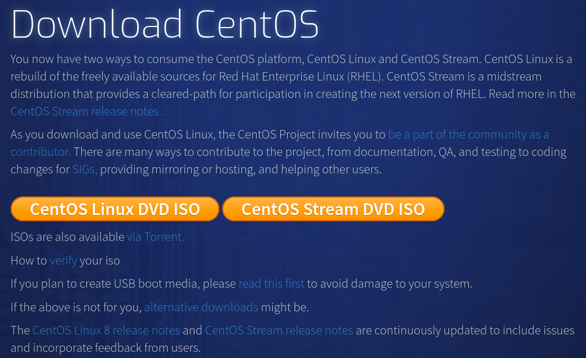
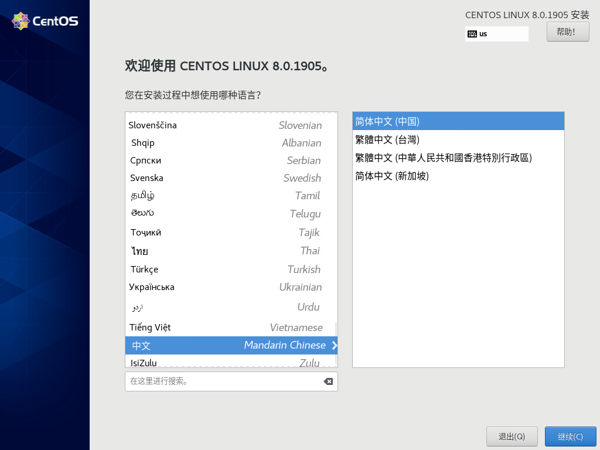
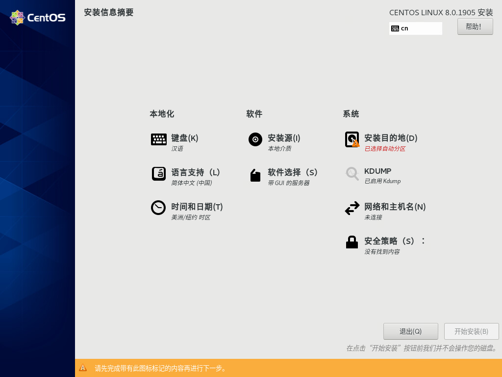
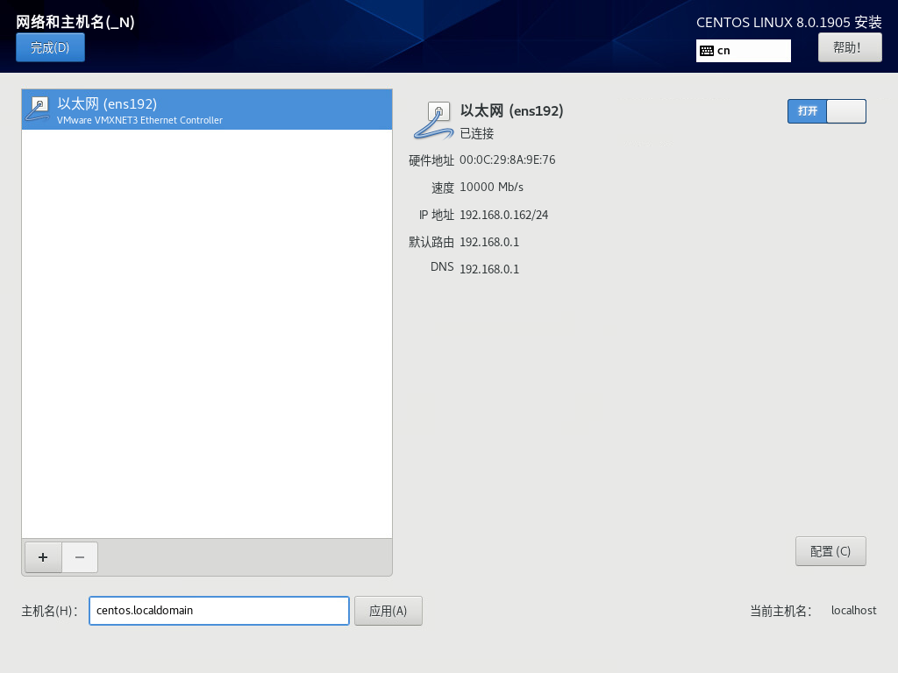
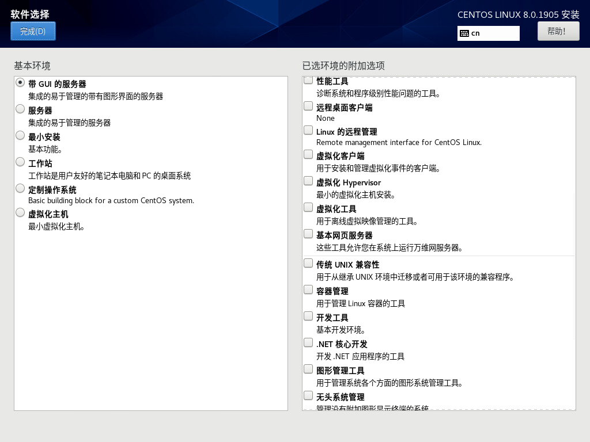
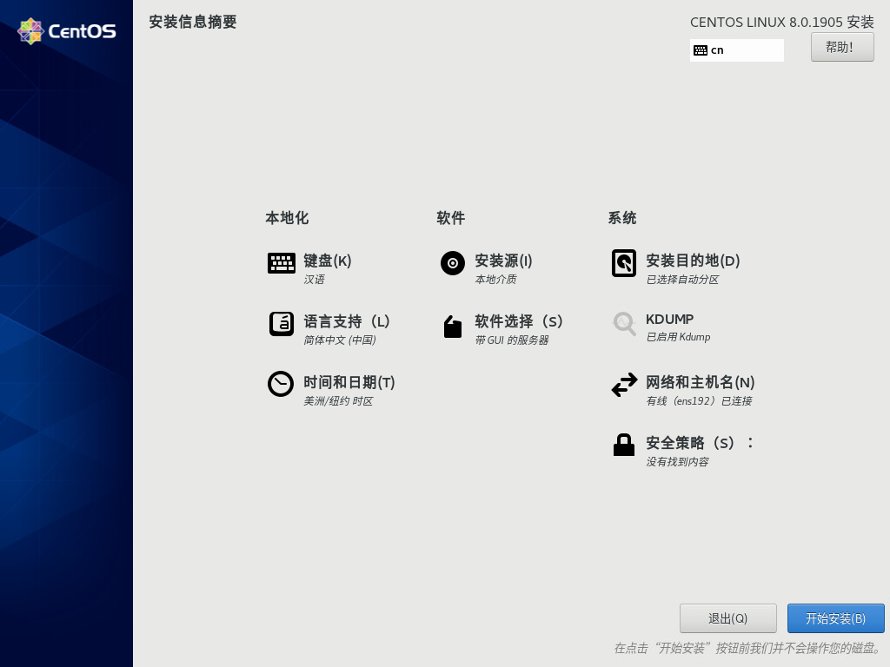

1.2 安装 CentOS¶
获取安装介质¶
要安装CentOS，请从官方网站上的列出的镜像网站链接处下载ISO镜像文件。CentOS官方网站的URL请参照以下内容：
注解
CentOS官方网站：https://centos.org

在官方网站上单击“Get CentOS Now”按钮。
CentOS根据不同的使用目的，提供不同的镜像下载。另外不同镜像初期安装的程序包也不相同。您可以在安装完成后添加或删除程序包，确保使用不同的镜像也同样可以构建相同的环境。
种类 |
使用目的 |
补充 |
|---|---|---|
CentOS Linux DVD ISO |
标准配置安装 |
标准安装镜像中用户可根据用途构建各种类型的配置 |
CentOS Stream DVD ISO |
滚动更新配置安装 |
CentOS Stream是一个滚动发行的发行版，它跟踪Red Hat Enterprise Linux（RHEL）开发之前的情况，它位于Fedora Linux和RHEL之间的中间位置 |
在本书中，您将使用“CentOS Linux DVD ISO”，点击“CentOS Linux DVD ISO”按钮，就会显示同步了CentOS存储库的镜像站的URL列表页面。下面我们开始对“CentOS-8-x86_64-1905-dvd1.iso”的安装步骤进行演示。
注解
ISO镜像版本会随时更新（本书使用的是1905）。安装及应用 CentOS-8（1905）须要最少2GB内存。我们推荐采用至少4GB内存。其他硬件条件要求，请参考以下URL: https://wiki.centos.org/zh/Manuals/ReleaseNotes
安装顺序¶
本书采用系统安装程序提供的默认安装方式，之后在每个章节都会提出需要附加的软件包与设置。
注解
需要使用VMware Workstations或Virtual Box在虚拟环境中安装CentOS时，请参照本书第十一章。
安装设备并启动
从下载的ISO镜像中启动安装程序。启动后，选择“Test this media & install CentOS 8”。

选项
概要
Install CentOS 8
安装程序在不检查介质的情况下启动。该选择可缩短启动时间。
Test this media & install CentOS 8
默认选择。在安装启动时对媒体进行检查，使用[Esc]键可以结束检查。
Troubleshooting
故障恢复。在已经安装的磁盘出现了异常的情况下，使用“Rescuea CentOS 8 system”对系统和内存进行检查。
选择语言
选择要在安装过程中显示的语言。在图形界面的左边栏中选中【中文】，图形界面的右边栏中选中【简体中文（中国）】。然后点击【继续】。
安装信息摘要
在【安装信息摘要】中可以进行各种设定。从任何内容开始设定都可以。在本书中，在【安装目的地】、【网络和主机名】、【软件的选择】这三个地方进行设定。
安装目的地
在【安装信息摘要】界面中选择【安装目的地】。此处对安装目标的磁盘和文件系统进行确认与配置。
在【设备选择】中，确认安装的装置中已经完成了检查。另外，在其他的存储选项的【存储配置】中，确认选择了【自动】，点击界面左上方【完成】。

注解
关于分区的详细内容，请参考第七章。
网络和主机名
在【安装信息摘要】界面中，选择【网络和主机名】。系统安装完成后也可以变更，在这里通过DHCP实现网络的有效化和设置主机名。
在本书中，主机名为 “centos.localdomain” 。另外，将以太网设为【打开】。设置结束后，单击界面左上角的【完成】。
软件选择
在【安装信息摘要】界面中，选择【软件选择】。默认情况下是【带GUI的服务器】，因此启动时为GUI界面。在本书中，后续的演示是在GUI环境中进行操作。
选择【基本环境】中的【带GUI的服务器】，点击界面左上角的【完成】。
开始安装
完成设置后，单击【安装信息摘要】界面右下角的【开始安装】。
配置root密码与创建普通用户
安装结束后的配置


{kind=link}
{kind=link}
{kind=link}
{kind=link}
{kind=link}
{kind=link}
{kind=link}
{kind=link}
{kind=link}
{kind=link}
{kind=link}
{kind=link}
{kind=link}
{kind=link}